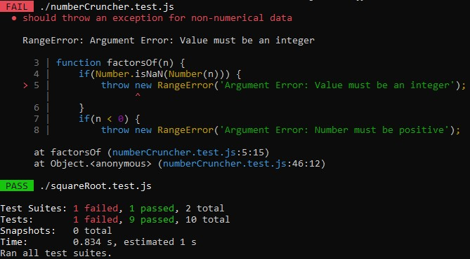
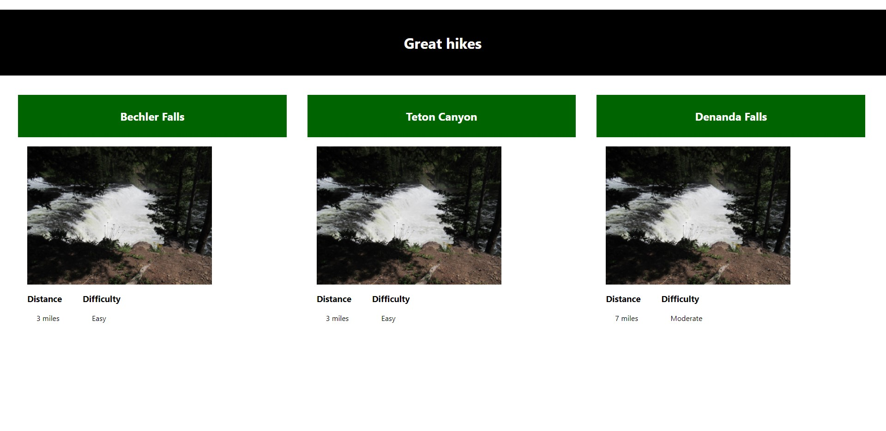

JEST Test Files
QUIZ NINJA
Team Activity - Original
Team Activity - Final
Descriptions
-
JEST Test Files - These two files implement NPM and JEST testing methods for JavaScript.
-
The Square Root Test first checks if the number provided is a non-negative, real number value.
If so, a test is run against an expected value. If the expected value matches the result, a PASS
statement is returned. Otherwise, a failure report is given with the error location.
-
The Number Cruncher Test has three parts:
-
All factors of a provided number are tested against an expected-value array. If both arrays
match, a PASS statement is returned.
-
Each result value is checked as being either prime or composite number. If
each number is prime, then a PASS statement is returned.
-
Several tests are performed against non-numerical, string, and negative values. If the provided number
matches none of these listed options, a PASS statement is returned.
If any of these tests fail, a failure report is given with specific error locations.
-
QUIZ NINJA PROJECT - This part of the project from Chapter 10 implements methods similar to JEST testing.
Rather than test the program with test() functions, the program relies on console.log() methods, displaying which
functions were activated after each user action.
-
Team Activity - Great Hikes - This activity required us to modify a previously designed JavaScript-based page
using modules, classes, or objects, so the code would 1) become more organized and 2) allow array objects to be called
individually through click/touch events. The click/touch events were designed to direct the user to a page that
expanded details about each hike. After viewing all the hike details, a BACK button is provided to return the
user to the homepage. (Our team's most recent layout is illustrated in the photo to the right.)
This Week's Highlights
-
JEST Testing - Pass and Failure Examples

-
Great Hikes - Team Activity Final Layout
